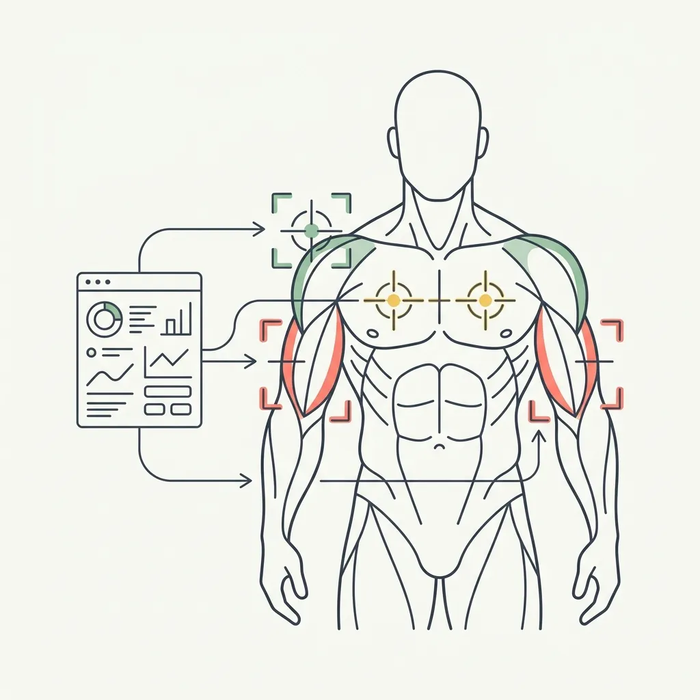

Your Score Says Your Chest Needs Work — Now What?
GainFrame tells you what your physique looks like. Soon it will tell you what to do about it. Here's why we're building AI-powered workout recommendations.

The Moment That Changed Our Roadmap
A few weeks ago, one of our early users was on a FaceTime call with a friend. He had his buddy download GainFrame and do the onboarding live via screen share. The friend got his first AI score, scrolled through his muscle group breakdown, and said:
"Ok so it tells me my chest and mid section need work — now what?"
That single question changed our entire roadmap.
Because he was right. GainFrame can tell you that your upper chest scored 74 out of 100. It can tell you that your triceps are "developing" while your front delts are "strong." It gives you specific, muscle-by-muscle feedback that no mirror or scale can provide.
But it stops there. It hands you the diagnosis and walks away.
The Gap Between Knowing and Doing
This is not a small problem. It is the biggest gap in the entire product.
Most people who go to the gym follow a general program. Push, pull, legs. A 5-day bro split. Whatever their favorite fitness influencer posted. These programs work. They build a solid foundation. But they are not personalized to your specific physique.
If your AI analysis shows your upper chest is lagging behind your shoulders by 8 points, your program does not know that. You run the same chest routine as everyone else, and the imbalance stays.
Right now, translating "your proportions score is 62" into "add face pulls to your shoulder day" requires fitness knowledge that many people do not have. Even experienced lifters struggle to self-diagnose weak points without an outside perspective.
So we asked ourselves: what if the app could close that loop?
What We Are Building: Target Training
Target Training is the feature that turns GainFrame from a tracking tool into a coaching tool. The concept is straightforward: use the AI physique analysis that already exists to identify your lagging muscle groups, then suggest specific supplemental exercises to address them.
Not a full workout plan. We are not trying to replace your program. You already have one that works for you. Target Training suggests 1-2 extra exercises you can add to what you are already doing — focused on the areas where AI sees the most room for growth.
Multi-angle photo analysis scores each visible muscle group on a 1-10 scale. The AI identifies where you have the most room for growth relative to your goals.
Choose up to 3 muscle groups to prioritize. The AI suggests areas, but you decide what matters most to you.
Personalized exercise picks from a database of 874 exercises. Not cookie-cutter lists — specific movements chosen for your body and your weak points.
Every month, the AI re-scans your photos and compares against your baseline. Did the extra exercises actually change your physique? Now you will know.
The Feedback Loop That Does Not Exist
Here is what makes Target Training different from Googling "best chest exercises."
Google gives you a list. A good list, probably. But it has no idea what your chest actually looks like. It does not know that your lower pecs are strong but your upper chest is lagging. It cannot track whether the exercises you picked are actually working. It is a one-way street.
Target Training creates a closed loop:
- Scan — The AI analyzes your physique photos and identifies lagging areas
- Target — You choose up to 3 focus areas and get personalized exercise suggestions
- Train — You add those exercises to your existing routine
- Re-scan — Monthly check-ins compare your current photos against your baseline
- Proof — You see whether those exercises actually changed your physique score
That last step is the one that matters. Most people never find out if their accessory work is making a difference. They just keep doing the same exercises and hope. Target Training replaces hope with data.
Why Not Build Full Workout Plans?
We had this conversation early. Full workout planning is a crowded space. Hevy, Strong, JEFIT — they all do it well. Building another workout planner would mean competing with apps that have years of head start and features we cannot match.
But none of them do what GainFrame does. None of them look at your actual body and say "your rear delts are underdeveloped relative to your front delts." That is the unique insight. And the most natural next step from that insight is not a full program — it is a targeted suggestion.
"Add face pulls to your shoulder day" is more actionable than a 6-day PPL split. It slots into whatever program you are already running. It does not ask you to change everything. It asks you to change one thing, and then it measures whether that one thing worked.
What This Looks Like in Practice
Imagine you have been training for six months. Your GainFrame score is 69. Your Deep Dive shows your front delts at 82 (strong), but your upper chest at 74 (developing) and your triceps at 75 (developing).
Target Training would surface a card: "Your upper chest has the most room for growth. It would benefit from incline-focused pressing." You pick upper chest, plus triceps and rear delts. The AI selects exercises from its database — maybe incline dumbbell press, overhead tricep extensions, and reverse pec deck.
A month later, the AI re-scans your photos. Your upper chest moved from 74 to 77. The system marks it as "Improving" and tells you the exercises are working. Your triceps stayed at 75. It suggests an alternative movement — maybe cable pushdowns instead of overhead extensions — and you try the new variation.
After three months, a full re-evaluation runs. Your upper chest graduated to "strong." The AI archives that focus area and suggests a new one. Maybe your hamstrings from a back photo you just started including.
This cycle — assess, target, train, measure — is the feedback loop that turns a static score into real, visible progress.
When Is It Coming?
Target Training is in the design phase right now. We are architecting the data models, mapping our 14-section muscle taxonomy to a public exercise database, and designing the check-in flow.
It will be a Pro feature. The AI calls required for multi-angle muscle assessment, exercise selection, and monthly progress evaluation are computationally intensive. But we are committed to making the initial assessment as simple as possible — you pick your focus areas, accept or skip the suggested exercises, and you are done in under a minute.
We do not have a ship date yet. What we do have is a clear vision for what GainFrame becomes when it can answer the question that started all of this.
The question was never about the score. It was always about what comes next. Target Training is the answer: scan your physique, find the gaps, fill them with targeted work, and prove it worked with data. No guessing. No hoping. Just a feedback loop that closes.
Try the Analysis That Started It All
Target Training is not built yet. But the AI physique analysis that powers it is live right now. Download GainFrame, import a progress photo, and see your muscle group breakdown for yourself.
When Target Training ships, you will already have the baseline data you need.
See what your AI analysis looks like. Download GainFrame and get your first muscle group breakdown in under a minute.